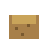
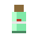
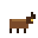
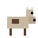
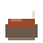
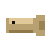

Farming, cooking and livestock
Crops by tier, irrigation, every dish, and keeping animals.
Growing crops
Till soil with a Hoe, plant seeds, and water each tile every day. A crop that is not watered does not grow that day. Click a ripe crop to harvest it. Some crops regrow after harvest. X removes tilled soil, crops and saplings.
Better crops need a higher Farming level to plant, and pay much more. Farming also gives you a chance of extra harvest, a bonus seed from level 4, hardy crops from level 6 (they sometimes grow on a day you forgot to water them), and market eye from level 8 (produce sells for 15% more). See Skills.
| Crop | Tier | Farming level | Days to grow | Regrows | Value each | Seed (value) |
|---|---|---|---|---|---|---|
| Radish | 1 | 1 | 3 | No | 5 | Radish Seeds (3) |
 Potato | 1 | 1 | 5 | No | 9 | Potato Seeds (4) |
| Beans | 2 | 3 | 5 | every 2 days | 7 | Bean Seeds (5) |
| Tomato | 2 | 2 | 6 | every 2 days | 8 | Tomato Seeds (5) |
| Corn | 2 | 3 | 7 | No | 16 | Corn Seeds (8) |
| Pumpkin | 3 | 5 | 9 | No | 22 | Pumpkin Seeds (12) |
| Glowmelon | 3 | 5 | 10 | No | 34 | Glowmelon Seeds (17) |
| Healroot | 4 | 7 | 12 | every 4 days | 26 | Healroot Seeds (15) |
Irrigation
A Sprinkler waters every tilled tile within three tiles of it each day, so long as it is connected to a Water Purifier through pipes. A light on the sprinkler shows green when it is connected and red when it is not. Buried pipes run underground and can pass under walls, floors and buildings, and they join up with surface pipes. X on a buried pipe digs it up.
Produce and animal goods
| Item | Description | Effect | Value | Hull price | Where to get it |
|---|---|---|---|---|---|
| Animal Feed | Mashed vegetables and grain. Put it in a trough, or feed an animal by hand. | - | 3 | 5 | Crafted at Workbench; Sold at Stockyard and Seed |
| Bean Seeds | Needs Farming level 3. Regrows. | - | 5 | 8 | Sold at Stockyard and Seed |
| Beans | Regrows if you leave the plant alone. Mash them or stew them. | +7 hunger | 7 | 12 | Found in the world |
 Beast Tonic | Healroot and clean water in a bottle. For an animal that has taken sick. Feed it afterwards. | - | 30 | 48 | Crafted at Clinic Bed; Sold at The Drip Apothecary; Sold at The Hull Clinic; Reward: Milk and Eggs |
| Cheese | Pressed at the stove. It keeps and it fills you up. | +42 hunger | 26 | 42 | Crafted at Stove; Sold at The Rusty Anchor |
| Corn | Sweet, filling and worth growing for the chowder. | +10 hunger | 16 | 26 | Found in the world |
| Corn Seeds | Needs Farming level 3. | - | 8 | 13 | Sold at Stockyard and Seed |
| Glowmelon | Faintly radioactive and very wet. Juice it to take the sting out. | +5 hunger, +20 thirst, +5 radiation | 34 | 55 | Found in the world |
| Glowmelon Seeds | Needs Farming level 5. | - | 17 | 28 | Sold at Stockyard and Seed |
| Healroot | A bitter root that closes cuts. The base of a good tonic. | +2 hunger, +6 health | 26 | 42 | Found in the world |
| Healroot Seeds | Needs Farming level 7. Regrows. | - | 15 | 24 | Sold at The Drip Apothecary; Sold at Stockyard and Seed |
| Milk | Warm, a little blue, and perfectly drinkable. Two heads, one udder. | +8 hunger, +18 thirst | 8 | 13 | Sold at The Rusty Anchor; Collected from a Twohead cow |
| Potato | Filling crop. Eat for food. | +24 hunger | 9 | 15 | Found in the world |
| Potato Seeds | - | 4 | 7 | Sold at Stockyard and Seed; Reward: Mouths to Feed | |
| Pumpkin | Heavy, slow and worth the wait. Each plant gives two. | +14 hunger | 22 | 36 | Found in the world |
| Pumpkin Seeds | Needs Farming level 5. Two pumpkins per plant. | - | 12 | 20 | Sold at Stockyard and Seed |
| Radish | Quick crop. Eat for food. | +14 hunger | 5 | 8 | Found in the world |
| Radish Seeds | - | 3 | 5 | Sold at Stockyard and Seed | |
| Roach Egg | Small, speckled and slightly irradiated. Cook it before you eat it. | +10 hunger, +6 radiation | 7 | 12 | Collected from a Roach hen |
 Roach Hatchling | A hatchling the size of your thumb. It will grow into a hen. | - | 30 | 48 | Sold at Stockyard and Seed |
| Tomato | Keeps producing. Eat for food and water. | +16 hunger, +8 thirst | 8 | 13 | Found in the world |
| Tomato Seeds | - | 5 | 8 | Sold at Stockyard and Seed; Reward: Mouths to Feed; Reward: The Last Packet | |
 Twohead Calf | A two-headed calf. Set it down on open ground and it will wander around your trough. | - | 90 | 144 | Sold at Stockyard and Seed |
Cooking
Cook at a Campfire or Stove. Better dishes need a higher Cooking level. Cooking gives a chance of an extra serving, makes meal buffs last longer, and from level 7 cooked dishes sell for 20% more. Jerky and dried fish from the Drying Rack keep for ever and carry no radiation.
| Dish | Cooked at | Ingredients | Effect | Buff | Needs | Value |
|---|---|---|---|---|---|---|
| Cooked Fish | Campfire | 1 Raw Fish | +30 hunger, +4 health | Hearty | - | 14 |
| Cooked Glowfish | Campfire | 1 Glowfish | +28 hunger, +3 health, +3 radiation | Rad Ward | - | 12 |
| Baked Potato | Campfire | 1 Potato | +38 hunger, +3 health | Warm Belly | - | 14 |
| Berry Mash | Campfire | 4 Berries | +22 hunger, +6 thirst | Sugar Rush | - | 9 |
| Veg Stew | Stove | 1 Potato, 1 Radish, 1 Tomato | +62 hunger, +12 health | Hearty, Warm Belly | - | 28 |
| Fish Stew | Stove | 2 Raw Fish, 1 Potato, 1 Tomato | +75 hunger, +16 health | Iodine Broth, Hearty | - | 36 |
| Tomato Soup | Stove | 2 Tomato, 1 Purified Water | +40 hunger, +25 thirst, +6 health | Rad Ward, Mending | - | 22 |
| Roast Meat | Campfire | 1 Raw Meat | +38 hunger, +5 health | Strong | - | 9 |
 Meat Stew | Stove | 2 Raw Meat, 1 Potato, 1 Tomato | +80 hunger, +14 health | Strong, Mending | - | 24 |
| Roast Corn | Campfire | 1 Corn | +26 hunger | Sugar Rush | - | 26 |
| Bean Mash | Campfire | 2 Beans | +30 hunger | Warm Belly | - | 18 |
| Corn Chowder | Stove | 2 Corn, 1 Potato | +58 hunger | Hearty, Warm Belly | Cooking 3 | 52 |
| Pumpkin Stew | Stove | 1 Pumpkin, 1 Potato, 1 Beans | +74 hunger, +8 health | Hearty, Mending | Cooking 4 | 58 |
| Melon Juice | Stove | 1 Glowmelon, 1 Empty Bottle | +32 thirst, -12 radiation | Rad Ward | Cooking 4 | 40 |
| Healroot Tonic | Stove | 2 Healroot, 1 Empty Bottle | +40 health, -25 radiation | Mending, Iodine Broth | Cooking 6 | 66 |
| Jerky | Drying Rack | 2 Raw Meat | +34 hunger | Warm Belly | - | 10 |
 Dried Fish | Drying Rack | 2 Raw Fish | +30 hunger | Hearty | - | 16 |
| Cheese | Stove | 2 Milk | +42 hunger | Hearty | Cooking 3 | 26 |
 Fried Roach Egg Fried Roach Egg | Campfire | 1 Roach Egg | +26 hunger, +2 health | - | - | 14 |
 Roach Omelette Roach Omelette | Stove | 2 Roach Egg, 1 Beans | +54 hunger, +4 health | Hearty, Warm Belly | Cooking 4 | 38 |
Livestock
Buy young animals at Stockyard and Seed in the Hull and set them down in your camp. They grow up in a few days.
- Feeding. Fill a Feed Trough with Animal Feed (crafted from radish or corn, or bought). Hungry animals walk to it. You can also feed them by hand. A hungry animal produces nothing.
- Products. Click an animal to collect milk or eggs. Milk becomes cheese, and eggs become fried eggs and omelettes.
- Slaughter. Hold a melee weapon and click the animal twice. You get meat and, from cows, hide, which cuts into cloth.
- Breeding. Two healthy, well-fed adults can have a young one each day there is room.
- Sickness. Hungry or crowded animals can fall sick. A sick animal produces nothing and loses health each day, and dies in about five days. A Beast Tonic, made at a Clinic Bed, cures it. A Clinic Bed in camp halves the chance of sickness.
- Husbandry is its own skill: more milk and eggs, less sickness, faster breeding and bigger yields as it rises.
| Animal | Bought as | Most you can keep | Grows up in | Gives daily | Slaughter |
|---|---|---|---|---|---|
| Twohead cow | Twohead Calf | 6 | 3 days | Milk | 4 to 6 Raw Meat, 2 Hide |
| Roach hen | Roach Hatchling | 12 | 2 days | Roach Egg | 1 to 2 Raw Meat |